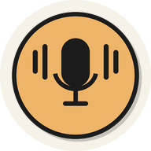

TalkLog privacy policy
This policy covers the TalkLog Android app (“TalkLog”), a voice and conversation recorder with optional AI transcripts. In short: your recordings are kept only on your phone. When you ask for a transcript, the audio being transcribed is sent to our AI service to be written down, and is not kept there. There is no account, no ads, no analytics and no tracking.
Information the app handles
- Audio you record with the microphone, or audio files you import or share to the app.
- Transcripts, summary cards, speaker names, titles and the “names & words” hints you type.
- Your settings.
All of this is stored in the app's private storage on your phone. The microphone is used only while you are recording, which is always shown by a notification with a timer and a Stop button.
AI transcripts and summaries (what is sent, where and why)
Transcription is the one online part of TalkLog. When a recording is transcribed (automatically after recording, unless you switch that off in Settings, or when you tap Transcribe):
- The audio is sent in parts of about 10 minutes, together with your “names & words” hint and a short description of the voices heard earlier, to our AI gateway (a server run by the developer), which passes it to Google Gemini to be written down.
- For the summary card, the transcript text (with the speaker names you chose) is sent the same way.
- A random install code made by the app (not linked to you or your phone) is sent so each install gets a fair daily limit.
Our gateway does not store the audio, the transcript or the answer; it keeps only a count of calls per install code per day to enforce the limit. Google processes the request under the Gemini API terms and Google's privacy policy. Data is sent over an encrypted (HTTPS) connection. Nothing is sent if you never transcribe.
Sharing
Recordings, transcripts and subtitles leave your phone only when you choose to export or share them, and only to the app or place you pick.
Recording other people
Please ask people before you record them; the law where you live may require it. TalkLog does not record phone calls.
Storage and deletion
Deleting a recording in the app deletes its audio, transcript and summary. Uninstalling the app removes all its data. Phone backups of the app's data are turned off.
What we don't do
- We don't sell or transfer user data to third parties, other than sending audio or text to Google Gemini when you transcribe, as described above.
- We don't show ads or use advertising IDs.
- We don't use analytics or crash-reporting services.
- We don't use your recordings to train AI models.
Children
The app is not directed at children under 13. A parent may record a conversation with their own child; that recording stays on the parent's phone.
Changes
If this policy changes, the updated version will be posted on this page with a new date.
Contact
Questions or requests: open an issue on GitHub.